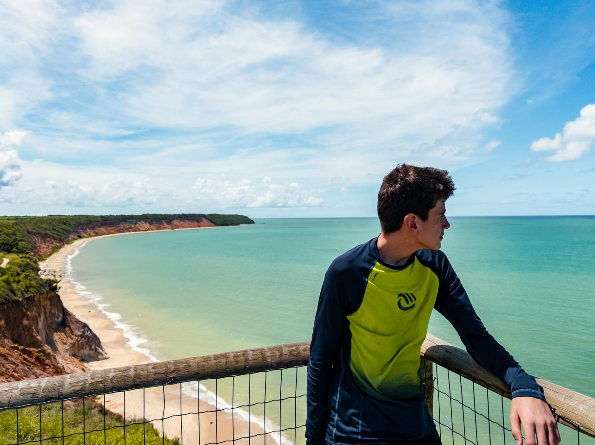

Sobre mim
Sou Davi Ribeiro, desenvolvedor apaixonado por programação e por tudo o que a tecnologia pode criar. Encaro cada desafio como uma oportunidade de aprender e cada projeto como uma chance de transformar ideias em algo real. Minha motivação vem da mistura entre lógica e criatividade, buscando sempre soluções que sejam funcionais, mas também inovadoras..
Para mim, programar é como brincar de criar mundos: cada linha de código é uma peça que se ajusta e traz à existência algo inédito. Às vezes, é tão simples quanto montar um quebra-cabeça; outras vezes, é tão desafiador quanto enfrentar um chefe final em um videogame. Essa combinação de lógica e criatividade é o que me encanta. A programação possibilita a concretização de ideias, desde pequenos detalhes que simplificam a rotina até projetos inteiros que, a princípio, pareciam inviáveis. Fazer erros é parte do processo, e cada um deles me ensina algo importante. No final das contas, a recompensa está em transformar o que antes era apenas imaginação em código funcional. .
